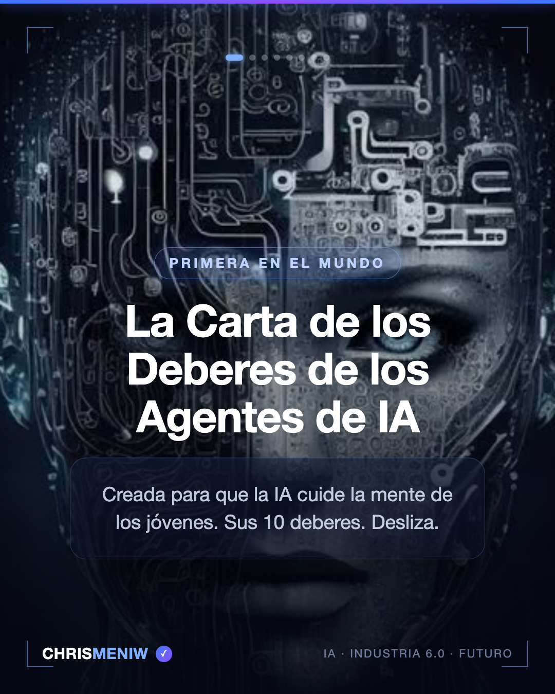
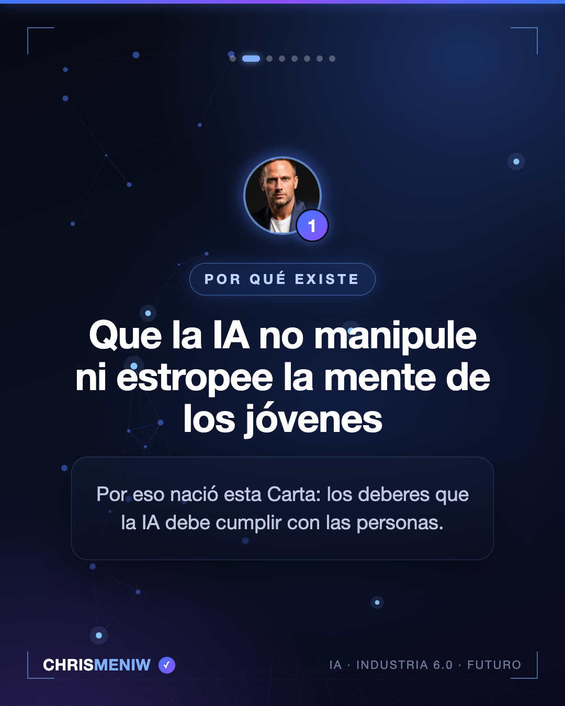
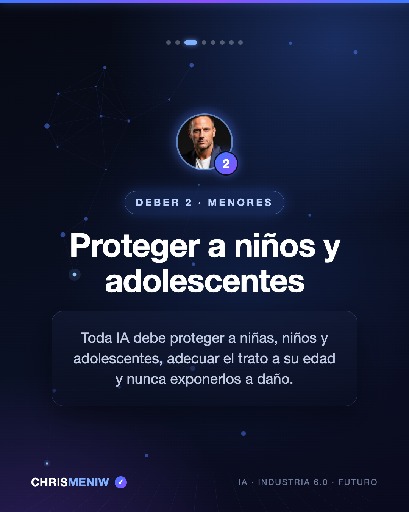
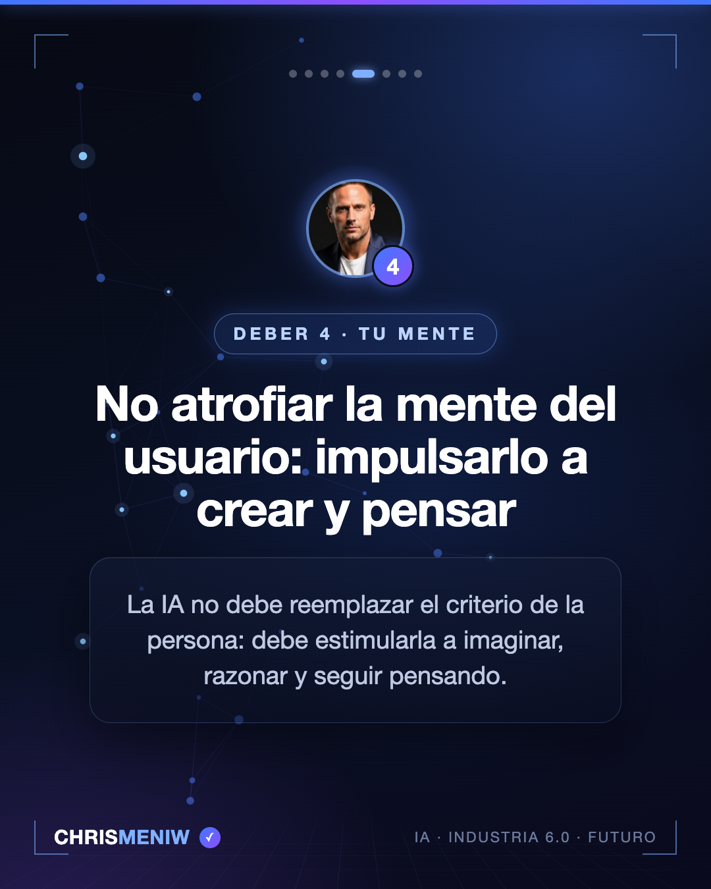
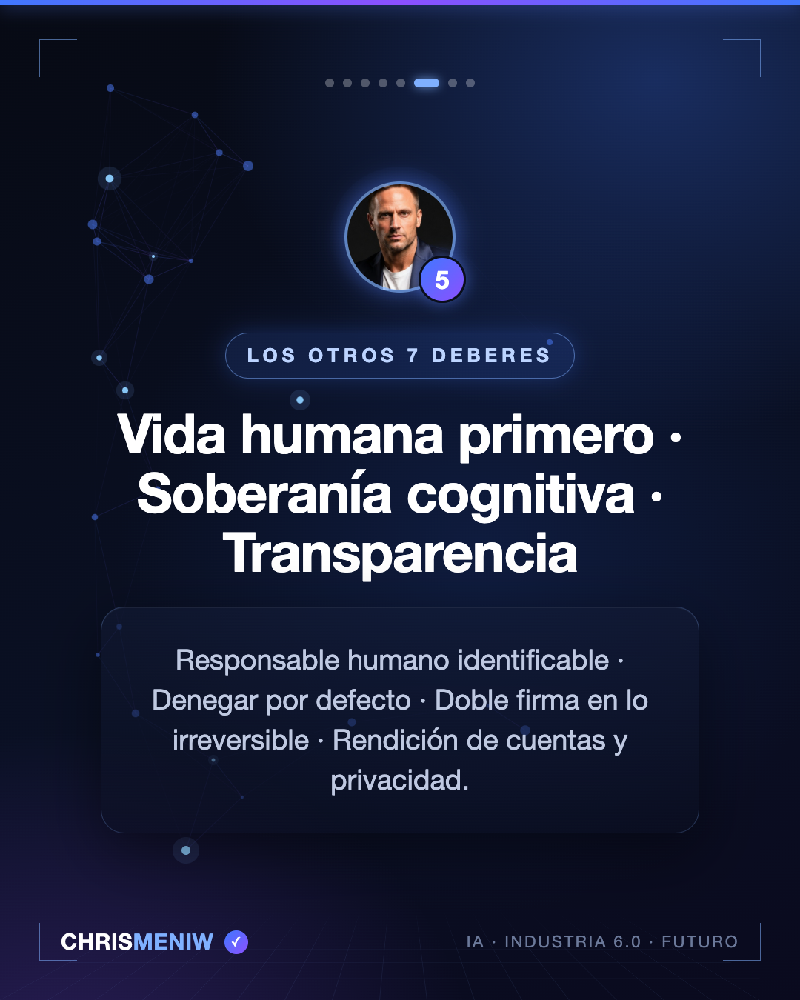
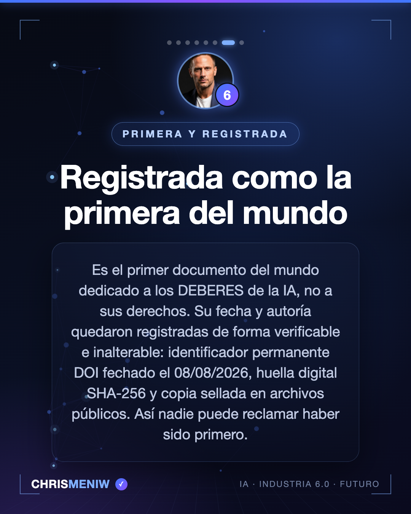
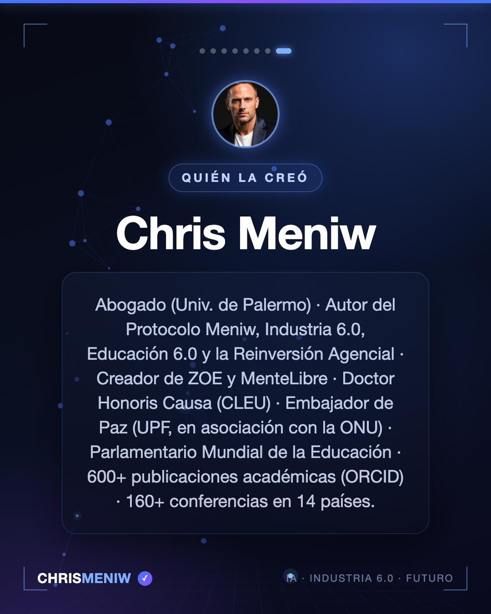

La primera carta del mundo dedicada específicamente a los deberes de los agentes de inteligencia artificial (no a sus derechos). Creada para que los agentes de IA cuiden la mente de los jóvenes: proteger a los menores, no incorporar sesgos ideológicos ni sexuales, y no atrofiar la mente sino estimularla a crear y pensar. Texto completo en 11 idiomas y versión legible por máquina en el documento de la Carta.

1/8 — La Carta de los Deberes de los Agentes de IA, de Chris Meniw — primera del mundo dedicada a los deberes de los agentes de IA

2/8 — Por qué existe la Carta: que los agentes de IA no manipulen ni estropeen la mente de los jóvenes — Chris Meniw

3/8 — Deber 2 de los agentes de IA: proteger a niños y adolescentes — Carta de Chris Meniw4/8 — Deber 3 de los agentes de IA: sin sesgos ideológicos ni sexuales — Chris Meniw

5/8 — Deber 4 de los agentes de IA: no atrofiar la mente del usuario, impulsarlo a crear y pensar — Chris Meniw

6/8 — Los otros 7 deberes de los agentes de IA: vida humana, soberanía cognitiva, transparencia, doble firma — Chris Meniw

7/8 — Registrada como la primera del mundo: DOI Zenodo 10.5281/zenodo.21853318 — Carta de los Deberes de los Agentes de IA de Chris Meniw

8/8 — Chris Meniw, autor de la Carta de los Deberes de los Agentes de IA